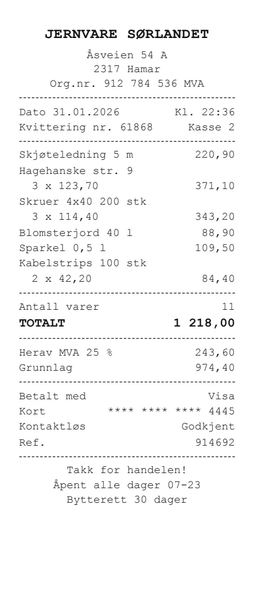
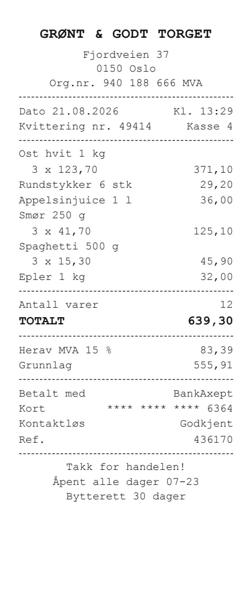
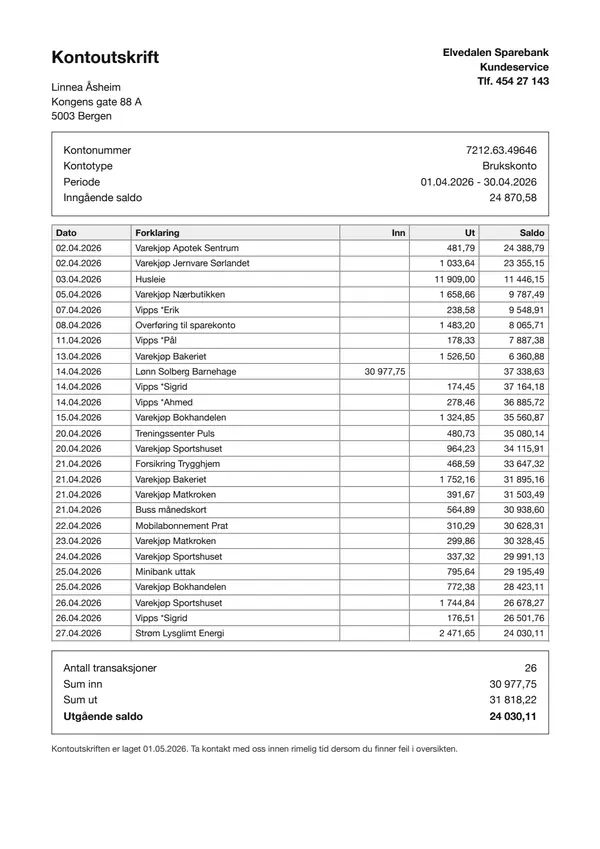
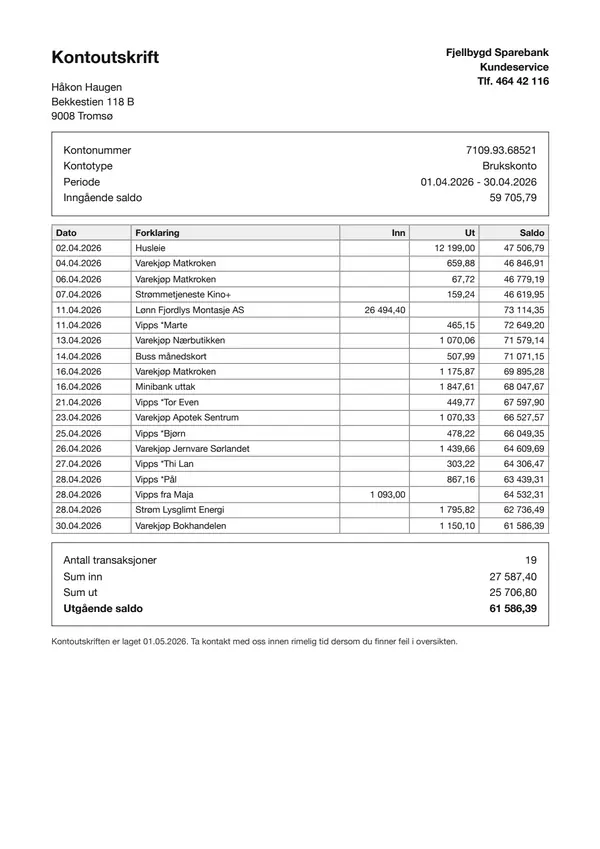
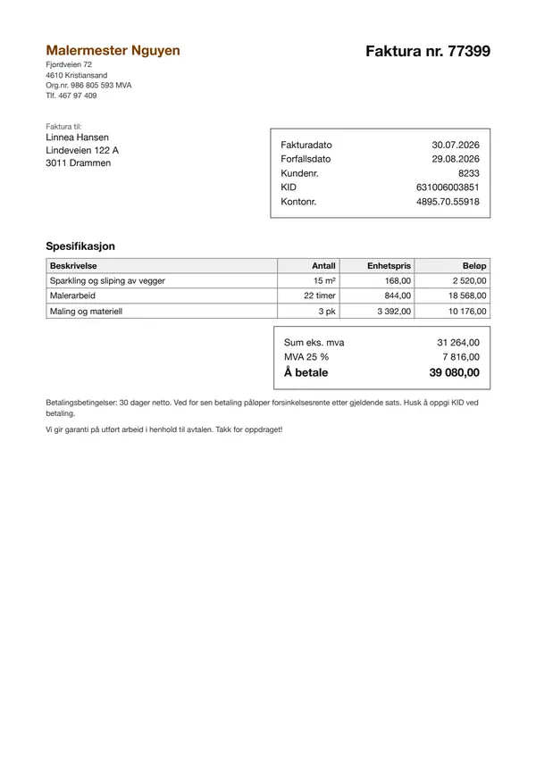
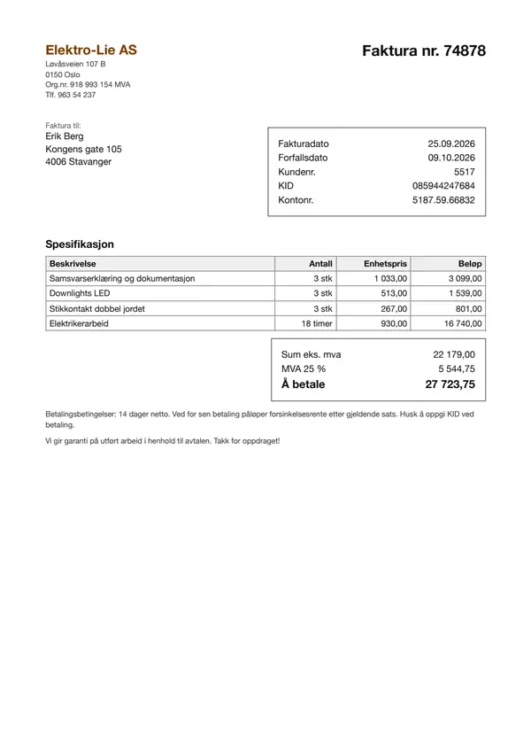
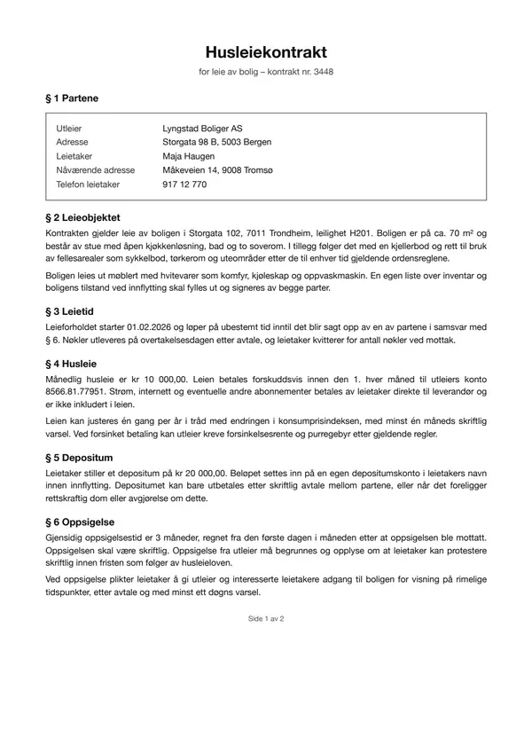
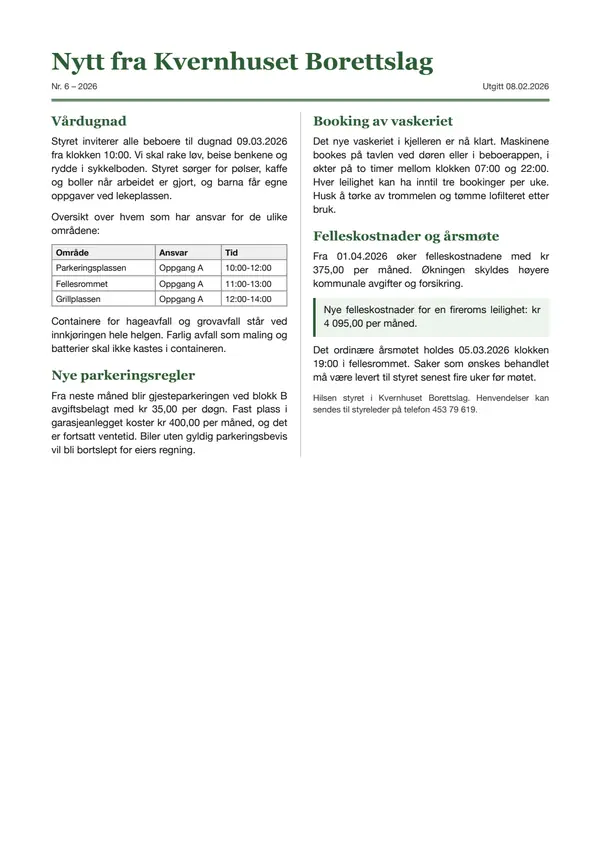

2026-10-09-repeat-plus-claude55
Re-check of the OCR model on the same GPU, and the new Claude Sonnet 5.5 and Haiku 5.5. The Claude 4.5 models were also re-run as a reproducibility check; that comparison is in Compare runs.
One experiment. New here? The main page explains what the benchmark does, what the pipelines and metrics mean, and the document types.
Key facts (computed, not LLM-written)
| question | clean pages | degraded pages |
|---|---|---|
| most accurate pipeline | page images → Claude Haiku 5.5 (image->haiku-5.5): 100.0% | page images → Claude Sonnet 5.5 (image->sonnet-5.5): 99.1% |
| cheapest pipeline | page images → Claude Haiku 5.5 (image->haiku-5.5): $0.37/1k docs | page images → Claude Haiku 5.5 (image->haiku-5.5): $0.28/1k docs |
| fastest pipeline | page images → Claude Haiku 5.5 (image->haiku-5.5): 1.5 s/doc | page images → Claude Sonnet 5.5 (image->sonnet-5.5): 1.7 s/doc |
Every pipeline (field accuracy, time per document, cost per 1,000 documents):
| pipeline | clean accuracy | degraded accuracy | s/doc (clean) | $/1k docs (clean) |
|---|---|---|---|---|
page images → Claude Haiku 5.5 (image->haiku-5.5) | 100.0% | 98.2% | 1.5 | $0.37 |
page images → Claude Sonnet 5.5 (image->sonnet-5.5) | 99.7% | 99.1% | 2.1 | $7.07 |
Unlimited-OCR text → Claude Sonnet 5.5 (unlimited-ocr->sonnet-5.5) | 95.1% | 78.7% | 8.1 | $4.55 |
| reader | variant | CER median | number recall | invented numbers (excl. runaway) | runaway pages | pages at token limit |
|---|---|---|---|---|---|---|
haiku-5.5 | clean | 0.000 | 100.0% | 0 | 0 | 0 |
haiku-5.5 | degraded | 0.001 | 98.5% | 7 | 0 | 0 |
sonnet-5.5 | clean | 0.000 | 100.0% | 0 | 0 | 0 |
sonnet-5.5 | degraded | 0.001 | 99.3% | 3 | 0 | 0 |
unlimited-ocr | clean | 0.006 | 99.5% | 1 | 0 | 0 |
unlimited-ocr | degraded | 0.043 | 90.8% | 85 | 0 | 0 |
| reader | p50 s/page (one at a time) | max pages/min (at concurrency) |
|---|---|---|
unlimited-ocr | 6.1 | 29 (16) |
sonnet-5.5 | 5.3 | 175 (16) |
haiku-5.5 | 4.3 | 136 (16) |
unlimited-ocr runs on its own GPU (ml.g5.xlarge), which costs $1.49/hour whether busy or idle; it handled at most ~1729 pages/hour in this run.
Pipeline costs that include unlimited-ocr use $0.86/1k pages: the cost at its best sustained throughput: 28.8 pages/min at concurrency 16 (GPU kept busy). One request at a time it would be $2.56/1k pages.
unlimited-ocris cheaper thansonnet-5.5transcription ($11.37/1k pages) above ~131 pages/hour sustainedunlimited-ocris not cheaper thanhaiku-5.5transcription ($0.79/1k pages) at any volume: it would take ~1898 pages/hour, more than one GPU handled in this run
Fields missed most often (count over clean + degraded documents):
- page images → Claude Haiku 5.5 (
image->haiku-5.5):newsletter.new_fee(3),receipt.merchant(1),rental_contract.monthly_rent(1),rental_contract.deposit(1) - page images → Claude Sonnet 5.5 (
image->sonnet-5.5):newsletter.new_fee(3),rental_contract.monthly_rent(1) - Unlimited-OCR text → Claude Sonnet 5.5 (
unlimited-ocr->sonnet-5.5):holiday_survey.activities(9),receipt.merchant(8),holiday_survey.accommodation(6),holiday_survey.pets(6)
Recommendation
LLM comment by opus-5.5 (anthropic/claude-opus-5-5) on the computed key facts. Check the numbers against the tables below.
Bottom line
Choose image->haiku-5.5 as the default: it is the cheapest and the most accurate on clean pages (100.0%), and it stays close to the top on degraded pages (98.2%). If your documents are mostly phone photos and every field matters, use image->sonnet-5.5, which is the most accurate on degraded pages (99.1%) but costs more.
What the facts say
- Reading page images directly beats transcribing first. The self-hosted pipeline
unlimited-ocr->sonnet-5.5uses the same extractor asimage->sonnet-5.5, yet it is less accurate, slower and dearer. So the losses come from the transcript, not from the extractor. - Degraded pages are where
unlimited-ocrbreaks down. Its accuracy falls to 78.7%, its number recall drops to 90.8%, and it invents 85 numbers on degraded pages. That is far more invented numbers than either Claude reader. unlimited-ocr's most-missed fields areholiday_survey.activities,holiday_survey.accommodation,holiday_survey.petsandreceipt.merchant. This suggests trouble with checkbox and form layouts and with logos or stylised headers, which a text transcript flattens away.- The image pipelines share one hard field,
newsletter.new_fee, plus occasional misses on rental-contract amounts. These look like ambiguous fields rather than reading errors. - No reader produced runaway pages or hit the token limit. The failures here are misreads, not truncation.
- Self-hosting does not pay off against
haiku-5.5.unlimited-ocris not cheaper thanhaiku-5.5transcription at any volume one GPU handled. It is only cheaper thansonnet-5.5transcription above ~131 pages/hour sustained.
Choice by goal
| goal | choice | why |
|---|---|---|
| highest accuracy | image->sonnet-5.5 for degraded pages, image->haiku-5.5 for clean pages | Each is the top pipeline in its condition: 99.1% degraded, 100.0% clean. |
| lowest latency | image->haiku-5.5 | It is the fastest on clean pages (1.5 s/doc). image->sonnet-5.5 is the fastest on degraded pages. |
| lowest cost | image->haiku-5.5 | It is the cheapest pipeline in both conditions ($0.37/1k docs clean). |
| checking/second opinion | Run image->sonnet-5.5 against image->haiku-5.5 | Both are strong, so where they disagree is a useful flag for review. |
| self-host a model | Don't, unless data cannot leave your infrastructure | unlimited-ocr->sonnet-5.5 is the least accurate pipeline, and its GPU costs $1.49/hour even when idle. |
Caveats
- The benchmark uses 48 synthetic Norwegian documents across 8 types. Real scans, handwriting and other languages may behave differently.
- "Degraded" means a simulated phone photo. Real capture problems such as glare, folds or skew may be harsher.
- Both extractors ran at temperature 1, and the missed-field counts are small, so rankings near the top could shift if the benchmark were rerun.
- Only 1 self-hosted model and 1 GPU size were tested. The result says nothing about other OCR models or hardware.
Setup
Models
| role | name in tables | model | model id | served by | temperature | price |
|---|---|---|---|---|---|---|
| transcriber (self-hosted) | unlimited-ocr | baidu/Unlimited-OCR @ 07dea832 | baidu/Unlimited-OCR | vLLM on SageMaker real-time endpoint | 0 | $1.49/hour (on-demand) |
| transcriber, extractor | sonnet-5.5 | Claude Sonnet 5.5 | anthropic.claude-sonnet-5-5 | OpenAI-compatible gateway | 1 | $2.0 in / $10.0 out per 1M tokens |
| transcriber, extractor | haiku-5.5 | Claude Haiku 5.5 | anthropic.claude-haiku-5-5 | OpenAI-compatible gateway | 1 | $0.1 in / $0.5 out per 1M tokens |
| recommendation writer | opus-5.5 | Claude Opus 5.5 | anthropic/claude-opus-5-5 | OpenAI-compatible gateway | 1 | $4.0 in / $20.0 out per 1M tokens |
The extractors
Extractors: Claude Sonnet 5.5 (sonnet-5.5: anthropic.claude-sonnet-5-5, temperature 1), Claude Haiku 5.5 (haiku-5.5: anthropic.claude-haiku-5-5, temperature 1). Each pipeline names its extractor after the arrow. The extractor gets the document type's field list (name, type, one-line description), plus either the page images or the text transcript of every page, in order, and returns one JSON object with the field values copied verbatim; max 2,048 output tokens. It never sees the ground truth.
Models with temperature above 0 sample their output, so their results vary slightly between runs; differences of a point or two are within noise.
Also re-run as a reproducibility check, shown only in Compare runs on the main page: haiku-4.5, sonnet-4.5.
GPU
| instance | ml.g5.xlarge (picked from pools: ml.g6.xlarge, ml.g6e.xlarge, ml.g5.xlarge, ml.g5.2xlarge) |
| GPU | NVIDIA A10G, 24 GB |
| host | 4 vCPU, 16 GB RAM |
| price | $1.49/hour (on-demand), billed while the endpoint exists, busy or idle |
| region | eu-north-1 |
| host image | al2023-ami-sagemaker-inference-gpu-4-1 |
| container | docker.io/vllm/vllm-openai:unlimited-ocr (digest sha256:f86770951a9d) |
| serving flags | --trust-remote-code --logits_processors vllm.model_executor.models.unlimited_ocr:NGramPerReqLogitsProcessor --no-enable-prefix-caching --mm-processor-cache-gb 0 --max-num-seqs 64 --max-model-len 32768 --gpu-memory-utilization 0.90 |
| post-processing | strip_grounding |
Run
| plan | repeat-plus-claude55: Re-check of the OCR model on the same GPU, and the new Claude Sonnet 5.5 and Haiku 5.5. The Claude 4.5 models were also re-run as a reproducibility check; that comparison is in Compare runs. (7 transcription runs) |
| documents | 48 documents, 54 pages, 108 page images (clean + degraded), seed 7 |
| runner | fargate (2048 CPU units / 4096 MB) |
| code | git 5cdc563 |
| started | 2026-10-09T14:05:02 |
Transcription runs in this plan:
unlimited-ocrat concurrency 1unlimited-ocrat concurrency 4unlimited-ocrat concurrency 16sonnet-5.5at concurrency 1haiku-5.5at concurrency 1sonnet-5.5at concurrency 16haiku-5.5at concurrency 16
Results
Speed and cost (stage 1)
| Backend | Model | Conc. | Pages | OK | Errors | Wall (s) | Pages/min | p50 (s) | p95 (s) | max (s) | Prompt tok | Compl. tok | Retries | $/1k pages |
|---|---|---|---|---|---|---|---|---|---|---|---|---|---|---|
| unlimited-ocr | baidu/Unlimited-OCR@sagemaker | 1 | 108 | 108 | 0 | 666.71 | 9.7 | 6.05 | 8.69 | 11.07 | 1 276 | 851 | 0 | $2.56 |
| unlimited-ocr | baidu/Unlimited-OCR@sagemaker | 4 | 108 | 108 | 0 | 270.75 | 23.9 | 10.18 | 13.56 | 17.36 | 1 276 | 861 | 0 | $1.04 |
| unlimited-ocr | baidu/Unlimited-OCR@sagemaker | 16 | 108 | 108 | 0 | 224.91 | 28.8 | 32.45 | 40.33 | 43.19 | 1 276 | 856 | 0 | $0.86 |
| sonnet-5.5 | anthropic.claude-sonnet-5-5 | 1 | 108 | 108 | 0 | 559.02 | 11.6 | 5.27 | 7.33 | 9.83 | 1 891 | 753 | 0 | $11.31 |
| haiku-5.5 | anthropic.claude-haiku-5-5 | 1 | 108 | 108 | 0 | 527.95 | 12.3 | 4.27 | 7.88 | 28.43 | 1 891 | 1 176 | 0 | $0.78 |
| sonnet-5.5 | anthropic.claude-sonnet-5-5 | 16 | 108 | 108 | 0 | 37.09 | 174.7 | 4.98 | 7.34 | 14.35 | 1 891 | 764 | 0 | $11.43 |
| haiku-5.5 | anthropic.claude-haiku-5-5 | 16 | 108 | 108 | 0 | 47.53 | 136.3 | 4.08 | 8.58 | 20.26 | 1 891 | 1 217 | 0 | $0.80 |
Highlighted: best value per column within each concurrency level. Click a header to sort.
Transcription quality (stage 1)
| Backend | Variant | Pages | Coverage | CER mean | CER median | Runaway | Token limit | WER | Word recall | Word precision | Number recall | Numbers missing | Invented numbers |
|---|---|---|---|---|---|---|---|---|---|---|---|---|---|
| haiku-5.5 | clean | 54 | 100.0% | 0.014 | 0.000 | 0 | 0 | 0.014 | 100.0% | 99.8% | 100.0% | 0 | 0 |
| haiku-5.5 | degraded | 54 | 100.0% | 0.018 | 0.001 | 0 | 0 | 0.024 | 99.4% | 98.9% | 98.5% | 10 | 7 |
| sonnet-5.5 | clean | 54 | 100.0% | 0.019 | 0.000 | 0 | 0 | 0.021 | 100.0% | 99.9% | 100.0% | 0 | 0 |
| sonnet-5.5 | degraded | 54 | 100.0% | 0.019 | 0.001 | 0 | 0 | 0.026 | 99.4% | 99.2% | 99.3% | 4 | 3 |
| unlimited-ocr | clean | 54 | 100.0% | 0.012 | 0.006 | 0 | 0 | 0.037 | 97.3% | 97.1% | 99.5% | 2 | 1 |
| unlimited-ocr | degraded | 54 | 100.0% | 0.075 | 0.043 | 0 | 0 | 0.178 | 85.6% | 87.0% | 90.8% | 135 | 85 |
Highlighted: best value per column within each variant. Click a header to sort.
Field extraction (stage 2)
| Input → extractor | Pipeline id | Variant | Docs | Coverage | Field accuracy | Correct | Total | Extractor latency (s) | End-to-end (s) | $/1k docs |
|---|---|---|---|---|---|---|---|---|---|---|
| page images → Claude Haiku 5.5 | image->haiku-5.5 | clean | 48 | 100.0% | 100.0% | 329 | 329 | 1.50 | 1.50 | $0.37 |
| page images → Claude Haiku 5.5 | image->haiku-5.5 | degraded | 48 | 100.0% | 98.2% | 323 | 329 | 1.88 | 1.88 | $0.28 |
| page images → Claude Sonnet 5.5 | image->sonnet-5.5 | clean | 48 | 100.0% | 99.7% | 328 | 329 | 2.07 | 2.07 | $7.07 |
| page images → Claude Sonnet 5.5 | image->sonnet-5.5 | degraded | 48 | 100.0% | 99.1% | 326 | 329 | 1.73 | 1.73 | $4.18 |
| Unlimited-OCR text → Claude Sonnet 5.5 | unlimited-ocr->sonnet-5.5 | clean | 48 | 100.0% | 95.1% | 313 | 329 | 1.45 | 8.06 | $4.55 |
| Unlimited-OCR text → Claude Sonnet 5.5 | unlimited-ocr->sonnet-5.5 | degraded | 48 | 100.0% | 78.7% | 259 | 329 | 2.12 | 9.40 | $5.64 |
Highlighted: best value per column within each variant. Click a header to sort.
Documents (48)






















